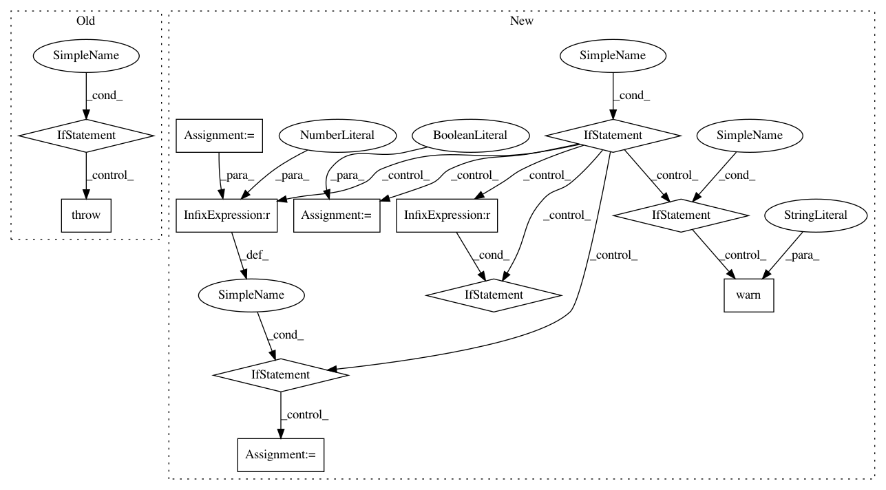

7d1e0bc5872855af5bf35a725025d3bdb6f07d6c,keras/callbacks.py,TensorBoard,__init__,#TensorBoard#Any#Any#Any#Any#Any#Any#Any#Any#Any#,631
Before Change
embeddings_layer_names=None,
embeddings_metadata=None):
super(TensorBoard, self).__init__()
if K.backend() != "tensorflow":
raise RuntimeError("TensorBoard callback only works "
"with the TensorFlow backend.")
global tf, projector
import tensorflow as tf
from tensorflow.contrib.tensorboard.plugins import projector
self.log_dir = log_dir
After Change
except ImportError:
raise ImportError("You need the TensorFlow module installed to use TensorBoard.")
if K.backend() != "tensorflow":
if histogram_freq != 0:
warnings.warn("You are not using the TensorFlow backend. "
"histogram_freq was set to 0")
histogram_freq = 0
if write_graph:
warnings.warn("You are not using the TensorFlow backend. "
"write_graph was set to False")
write_graph = False
if write_images:
warnings.warn("You are not using the TensorFlow backend. "
"write_images was set to False")
write_images = False
if embeddings_freq != 0:
warnings.warn("You are not using the TensorFlow backend. "
"embeddings_freq was set to 0")
embeddings_freq = 0
self.log_dir = log_dir
self.histogram_freq = histogram_freq
self.merged = None
self.write_graph = write_graph
In pattern: SUPERPATTERN
Frequency: 3
Non-data size: 12
Instances
Project Name: keras-team/keras
Commit Name: 7d1e0bc5872855af5bf35a725025d3bdb6f07d6c
Time: 2018-01-24
Author: gabrieldemarmiesse@hotmail.fr
File Name: keras/callbacks.py
Class Name: TensorBoard
Method Name: __init__
Project Name: interactiveaudiolab/nussl
Commit Name: d5f74cc30a8f0a192d5ef8818c6d72c3707c4a97
Time: 2017-02-04
Author: ethanmanilow@gmail.com
File Name: nussl/audio_signal.py
Class Name: AudioSignal
Method Name: load_audio_from_file
Project Name: interactiveaudiolab/nussl
Commit Name: efc54499191ead69f875877badd3578c60eba7a6
Time: 2017-02-08
Author: ethanmanilow@gmail.com
File Name: nussl/audio_signal.py
Class Name: AudioSignal
Method Name: load_audio_from_file